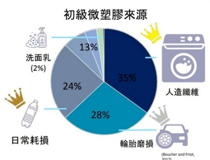
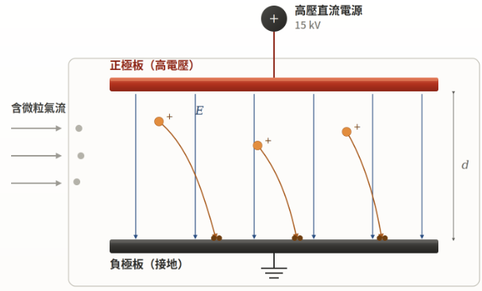
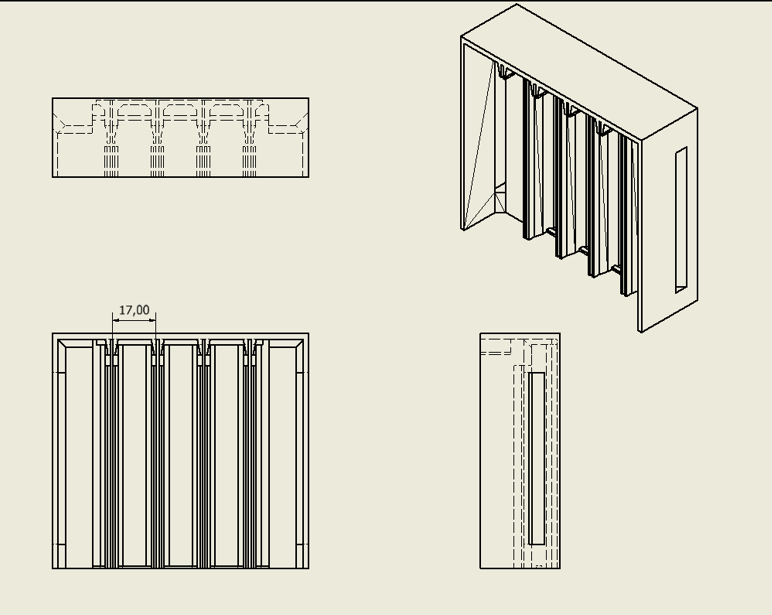
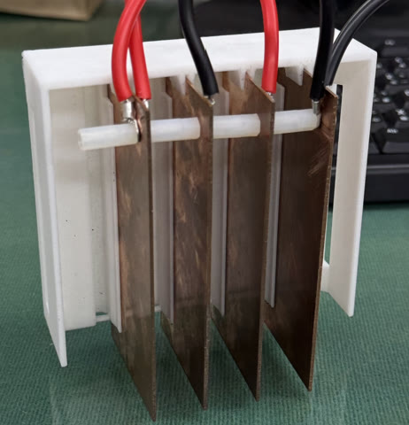
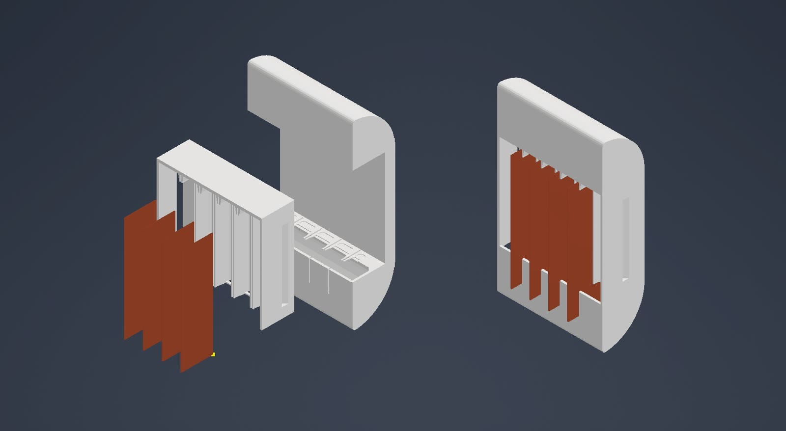
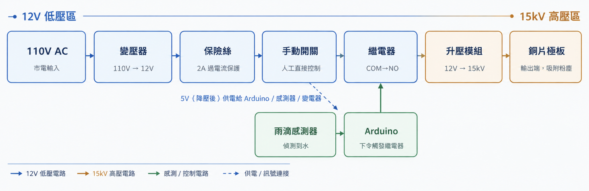
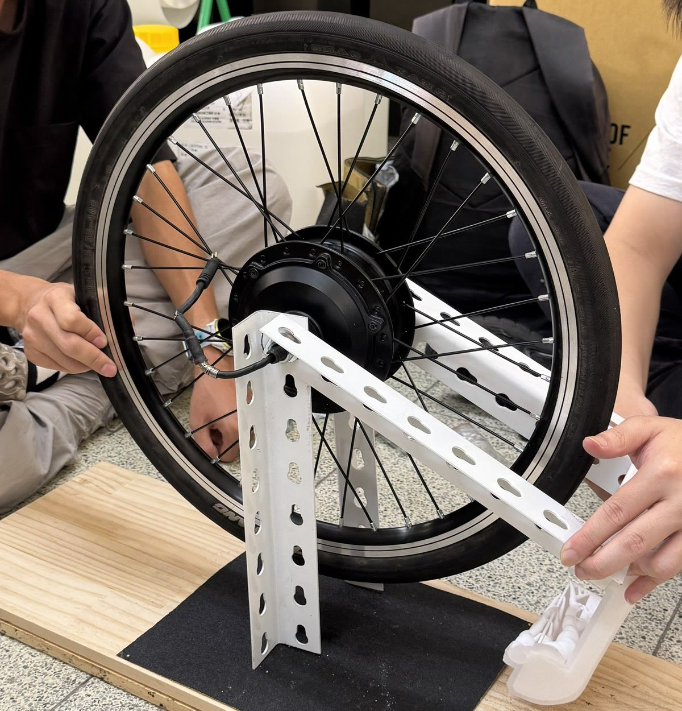

電動車普及使廢氣排放下降，但電池增加車重、瞬間扭力大，輪胎與路面磨損微粒（TRWP）的排放並未隨之改善。

輪胎含防老劑 6PPD，其氧化產物 6PPD-Q 隨雨水進入水體，已證實對水生生物具急性毒性，且已在人體尿液中檢出。
| 方案 | 原理 | 限制／特點 |
|---|---|---|
| 傳統濾網 | 物理過濾 | 增加風阻、易堵塞，影響續航 |
| 被動導流 | 慣性分離 | 對細懸浮微粒 PM2.5 捕捉有限 |
| 本專題 | 主動式 高壓靜電 | 無濾網，以庫侖力吸附導電微粒 |

V = 15 kV，d = 17 mm
微粒經輪胎摩擦及接觸極板而帶電。TRWP 含碳黑等導電填料，其中粒徑較小者慣性小，較易在 17 mm 極板間被電場偏折並吸附；受力與電壓成正比、與間距成反比。


| 設計項目 | 規格與驗證結果 |
|---|---|
| 高壓電源鏈路 | 110 V→12 V→15 kV，空載與載入均正常運作 |
| 極板定距結構 | 4 片平行銅片、間距 17 mm，尼龍柱定距，振動下無位移 |
| 絕緣封裝 | 熱熔膠封裝，未見沿面漏電與跳火 |
| 外殼成型 | PLA 3D 列印，可搭載於馬達後方 |


| 驗收項目 | 結果 |
|---|---|
| 開機（乾燥狀態）繼電器通電 | 通過 |
| 偵測到降雨即時斷電 | 通過 |
| 停雨後延遲復電 | 通過 |
| 手動開關強制斷電 | 設計成立 |

擴散範圍水平 0–73 cm，沉積量最多處位於 27 cm（寬約 21 cm），裝置置於 25 cm。初期測試中，1 cm 處沉積量反低於 3、5 cm：距離輪胎越近，沉積量不一定越多。
| 樣品 | m/z 實測 | 質量誤差 |
|---|---|---|
| 1 砂紙直接磨耗之輪胎粉塵 | 268.1926 | 2.98 ppm |
| 2 本裝置集塵盒收集之粉塵 | 268.1930 | 1.49 ppm |
6PPD 理論值 268.1934 Da。兩組樣品於 m/z 268 皆出現與 6PPD 相近之訊號（誤差 < 5 ppm），惟同位素強度比與理論值不完全吻合，現階段以「疑似 6PPD」描述，仍待 6PPD 標準品比對確認。
應用方向：優先以商用車隊（公車、貨車）進行場域驗證。
致謝：中原大學化學系 蔡祐輔教授 提供高解析質譜儀。